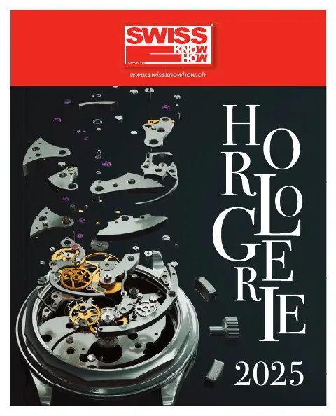

En bref
Le plus grand salon suisse de la haute précision se tiendra du 3 au 6 juin 2025 à Palexpo Genève. Son directeur Alexandre Catton tire un bilan très positif de l'édition 2024 : 765 exposants, plus de 23 000 entrées et 98 % d'exposants satisfaits de la qualité des visiteurs. Plutôt que de bouleverser la formule, l'organisation la fait évoluer et développe ses médias toute l'année : newsletters touchant 30 000 professionnels, compte LinkedIn et nouvel Innovation Digest. Si l'horlogerie ralentit, les medtechs sont en croissance : plus de la moitié des participants travaillent pour le médical, faisant d'EPHJ le principal salon medtech du pays. L'édition 2025 affiche presque complet.
« Le Salon, c'est 361 jours + 4. »— Alexandre Catton
L'interview intégrale
Loin de bouleverser une formule qui fonctionne, l’EPHJ 2025 s’annonce dans la continuité d’un succès bien établi, avec quelques ajustements stratégiques. Dans une conjoncture contrastée entre ralentissement de l’horlogerie et dynamisme des medtechs, le plus grand salon suisse de la haute précision continue de jouer un rôle clé pour les exposants et visiteurs en quête d’innovation et d’opportunités.
Pour son directeur Alexandre Catton, avec une fréquentation en hausse et des initiatives digitales renforcées, l’événement reste un rendez-vous incontournable. L’édition 2025 se tiendra du 3 au 6 juin à Palexpo Genève.
Quel a été le bilan de l’édition 2024 ?
Très positif ! Surtout si l’on s’en tient aux chiffres : 765 exposants dont plus de 80% d’entre eux étaient déjà là en 2023 et plus de 23'000 entrées avec 98% des exposants qui se sont déclarés satisfaits de la qualité de visiteurs, ce qui signifie implicitement des opportunités d’affaires intéressantes. Et la plupart des exposants sont déjà réinscrits pour l’édition 2025 qui n’est pas loin d’afficher complet !
Comment évolue la fréquentation, tant au niveau des exposants que du public ?
Elle continue de croître raisonnablement car nous privilégierons toujours la qualité à la quantité dans une unité de lieu qui nous tient à cœur. Nous ne souhaitons pas nous disperser dans une autre halle de Palexpo. Le nombre de visiteurs augmente chaque année pour optimiser le potentiel affaires des exposants. Et cela fonctionne puisque la très grande majorité des exposants déclarent y faire des affaires.
Quels sont les nouveautés/changements pour l’édition 2025 ?
On ne change pas une recette qui marche ! On la fait évoluer par petites touches, on travaille les accompagnements, l’entrée, le dessert... Au-delà de l’événement lui-même nous développons continuellement les médias du salon pour en faire des supports de communication efficaces, tout au long de l’année, au service des exposants. Le Salon, c’est 361 jours + 4, notamment avec nos newsletters EPHJ qui touchent une communauté de 30'000 professionnels. Notre compte LinkedIn se développe rapidement avec déjà plus de 6'000 abonnés. Dans cet esprit, nous avons publié au mois de septembre la 1ère édition de notre Innovation Digest qui présente en détails les innovations 2024 dévoilées au Salon. Un véritable baromètre de nos industries !
Dans quelle mesure le ralentissement conjoncturel influe sur la participation des exposants ? Et sur lesquels en particulier ?
Tous les secteurs ne vivent pas au même rythme. Si un ralentissement est observé dans certains segments de l’horlogerie, les medtechs affichent une croissance régulière et constante. La transversalité des savoir-faire que nous prônons depuis plus de 15 ans a pris tout son sens ces dernières années et les exposants en ont pris la mesure ! En 2024, plus de la moitié des participants annonçaient une activité dans l’industrie médicale. Avec plus de 400 entreprises travaillant dans ce secteur, EPHJ est d’une certaine façon le plus important salon medtech de Suisse.
Et si le ralentissement du marché horloger est conjoncturel, il n’engendre pas de baisse de la fréquentation du Salon. Au contraire ! Nous sommes quasiment déjà complets car les entreprises ont bien compris que cette période est aussi une opportunité à saisir pour se montrer, valoriser ses savoir-faire et nouer des contacts avec des prospects. L’industrie horlogère a connu d’autres aléas conjoncturels, elle s’en est toujours remise.
Il y a quelques années, on prédisait que de tels événements allaient disparaitre. Que faut-il en conclure aujourd’hui ?
Quand, il y a quelques années, on annonçait la fin des salons traditionnels, c’était pour dire que le monde virtuel et numérique s’y substituerait. Ce n’est pas le cas dans notre univers. EPHJ est une occasion unique pour rencontrer l’ensemble de ses clients et partenaires dans un seul lieu et en quelques jours. Le tout dans un état d’esprit convivial qui a fait la réputation du Salon. Visiter EPHJ, c’est aussi se laisser surprendre. Quand on voit le nombre d’innovations présentées sur le salon, on se dit que c’est vraiment l’endroit où il faut être si on veut rester connecté avec l’évolution de son industrie.
Les attentes des exposants et du public ont-elles changé ?
Les objectifs des exposants sont restés les mêmes : faire des affaires et entretenir son réseau dans un esprit convivial, découvrir les innovations qui vont façonner l’avenir de son domaine et faire de la veille technologique. Ce qui a changé pour les visiteurs, c’est qu’ils ont moins de temps. Ils arrivent donc mieux préparés et on les aide pour cela avec, entre autres, l’application mobile.
Texte paru dans Swiss Knowhow – Horlogerie 2025, p. 5.
Personnes citées
- Alexandre CattonDirecteur de l'EPHJ

Paru dans
Swiss Knowhow – Horlogerie 2025
2025 · page 5 · article original en français
Lire l'article complet PDF